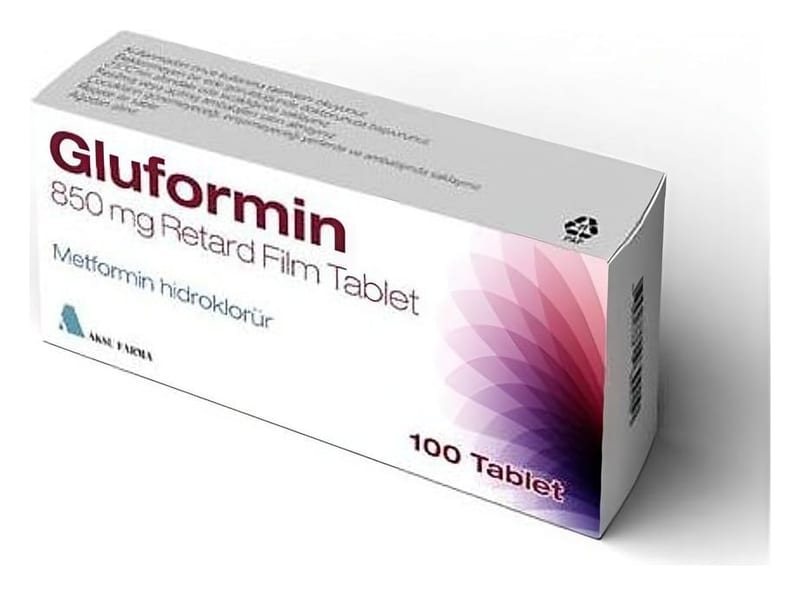

Gluformin 850 mg Retard Film Tablet, 100 Tablet

Ne için kullanılır
KT · Bölüm 1 GLUFORMIN oral antidiyabetikler (biguanidler) olarak adlandırılan bir ilaç grubuna dahildir. Bu tür ilaçlar şeker hastalığını (diyabet) tedavi etmede kullanılırlar. Her bir film kaplı tablet 850 mg metformin hidroklorür içeren 50 ve 100 tabletlik Alu/PVC blister ambalaj içerisinde, kullanma talimatı ile birlikte kullanıma sunulmaktadır. GLUFORMIN hemen hemen beyaz, yuvarlak tabletler şeklindedir. İnsülin pankreas tarafından üretilen ve dolaşıma verilen bir hormon olup vücudunuzun kandaki glukozu (şeker) almasını sağlar. Vücudunuz glukozu enerji üretmek için kullanır veya ileride kullanmak için depolar Eğer şeker hastalığınız varsa, pankreasınız yeterli insülini üretmiyor veya vücudunuz üretilen insülini düzenli kullanamıyordur. Bu durum kanınızda yüksek düzeyde glukoz bulunmasına neden olur. GLUFORMIN kanınızdaki glukoz düzeyini mümkün olduğunca normal düzeye düşürmeye yardımcı olur. GLUFORMIN, tek başına diyet ve egzersizin kan şekeri düzeyini kontrol etmede yetersiz kaldığı özellikle fazla kilolu tip 2 diyabetli hastaları (insülinden bağımsız diyabet olarak adlandırılan, bir tür şeker hastalığı) tedavi etmede kullanılır. Erişkinler, GLUFORMIN’i tek başına veya şeker hastalığını tedavi etmede kullanılan diğer ilaçlarla (ağızdan alınan ilaçlar veya insülin) birlikte kullanabilir. 10 yaş ve üzeri çocuklar ve ergenler GLUFORMIN’i tek başına veya insülinle birlikte kullanabilir. Yalnız yaşam tarzı değişikliğinin glukoz değerlerini normal sınırlarda tutmakta yetersiz kaldığı durumda, en az bir risk faktörü olan prediyabetik bireylerde tip 2 diabetes mellitusun önlenmesi.